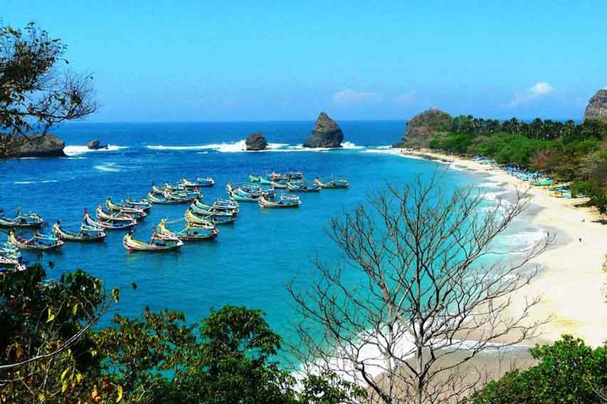

Event
JFC 2024 Siap Digelar
Persiapan Jember Fashion Carnaval 2024 telah mencapai 80%. Event tahunan ini akan menampilkan tema yang lebih menarik...
Baca Selengkapnya
Budaya
Tari Can Macanan Kaduk: Warisan Leluhur
Mengenal lebih dekat tarian tradisional khas Jember yang sarat makna...
Baca Selengkapnya

Wisata
Pantai Papuma: Surga Tersembunyi di Jember
Keindahan alam pantai Papuma yang memukau dengan pasir putihnya...
Baca Selengkapnya
Event
BBJ 2024: Agenda Wisata Tahunan
Bulan Berkunjung ke Jember (BBJ) 2024 menghadirkan...
Baca Selengkapnya